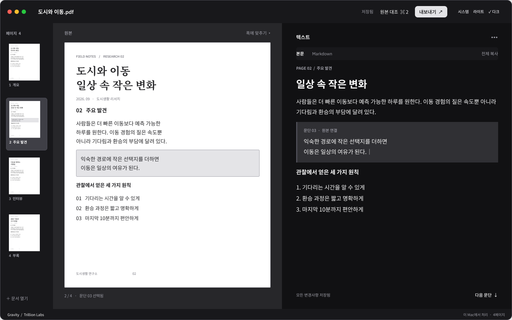

업로드 없이
PDF와 이미지를 외부 서버로 보내지 않고 처리합니다.
PDF와 이미지에서 필요한 내용을 빠르게 꺼내세요.
업로드 없이 추출하고, 편집하고, Markdown으로.

파일을 서버에 올릴 필요 없이.
문서 인식은 내 Mac 안에서 끝납니다.
PDF와 이미지를 외부 서버로 보내지 않고 처리합니다.
모델을 한 번 설치하면 인터넷 없이 사용할 수 있습니다.
결과를 확인하고, 복사하거나 Markdown으로 내보내세요.
기다림을 줄이고, 하던 일을 이어가세요.
01 / OCR
02 / DECODING
기준 디코더 대비
문서 속 표와 수식을 추출하고,
원본 옆에서 결과를 확인하세요.
예시 PDF의 실제 추출 결과 · PDF 보기 ↗
| 거리 | 나무수 | 기온 |
|---|---|---|
| 중앙 거리 | 24 | 27℃ |
| 정원 길 | 12 | 29℃ |
| 역 앞 도로 | 4 | 32℃ |
행과 열을 유지한 표를 미리보기에서 확인하세요.
\Delta T = 32 - 27 = 5^{\circ} C수식은 LaTeX로 추출하고, 읽기 편한 형태로 확인하세요.
Gravity를 무료로 만나보세요.
공개 배포를 준비하고 있습니다.
준비가 끝나면 여기에서 받을 수 있습니다.
macOS 14 이상 · Apple Silicon Mac
최초 모델 설치 시 인터넷 연결 필요
네. Gravity는 무료 다운로드로 공개할 예정입니다.
첫 모델 설치에는 인터넷이 필요합니다. 설치 후 문서 인식은 오프라인으로 실행합니다.
PDF, PNG, JPEG, HEIC 파일을 지원합니다.
상단 이미지는 제품 디자인 미리보기입니다. 아래 표·수식 예시는 앱의 실제 추출 결과이며, 최종 배포 화면은 달라질 수 있습니다.